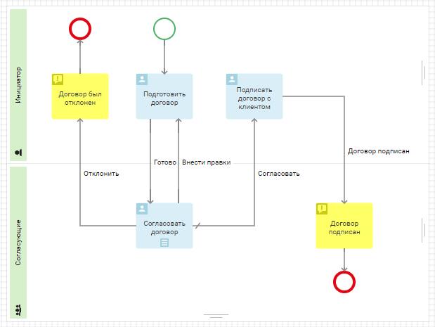
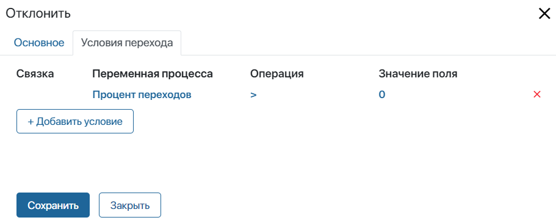
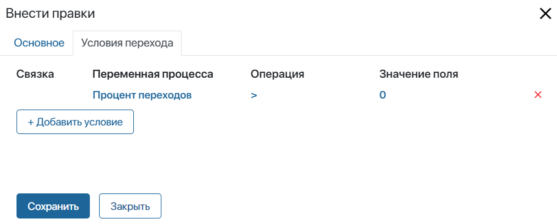
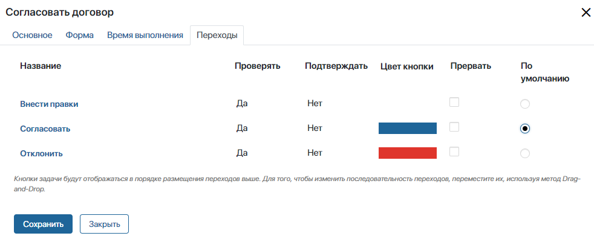
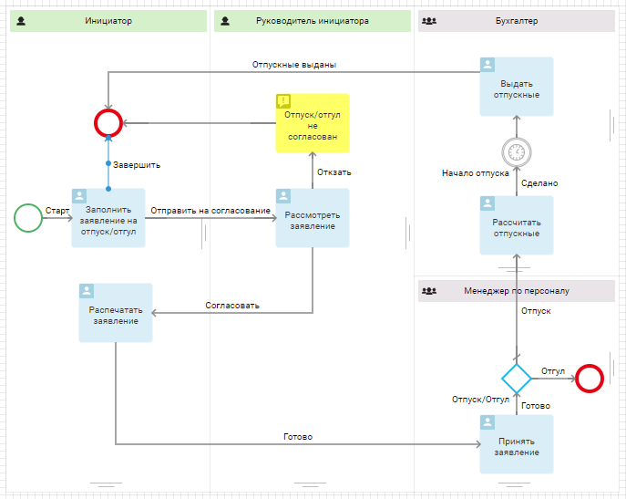
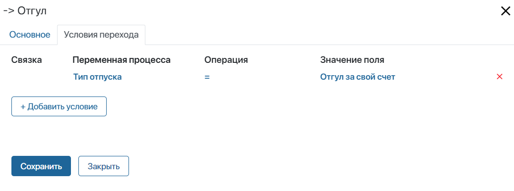
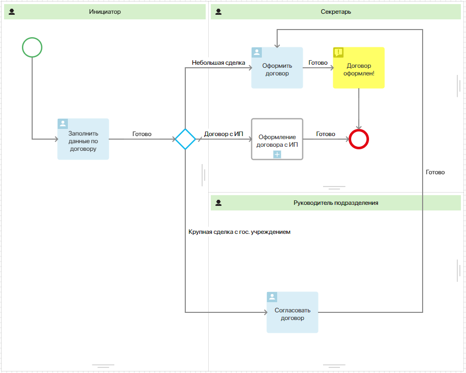
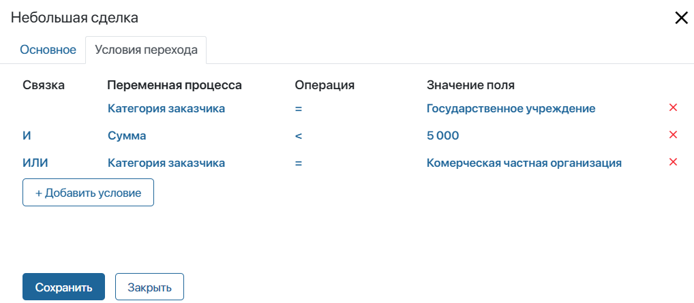
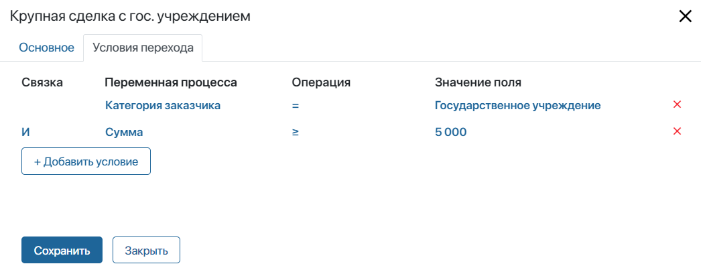

Переход из задачи с множественным выполнением
Рассмотрим процесс согласования договора.

Он состоит из следующих этапов:
- Инициатор подготавливает договор, выбирает согласующих и отправляет им документ на ознакомление.
- После того как согласующие ознакомятся с договором, они могут отклонить его, отправить на доработку или согласовать.
- Если договор был отклонён, процесс завершается.
- Если договор был отправлен на доработку, инициатору придёт задача внести правки. Затем договор будет отправлен на повторное рассмотрение согласующим.
- Если договор был согласован, инициатор организовывает встречу с заказчиком, и стороны подписывают договор.
При моделировании процесса необходимо предусмотреть ситуацию, когда кто-то утвердит договор, кто-то попросит внести правки, а кто-то отклонит его. Такое развитие процесса будет определяться настройками переходов. Чтобы настроить ход процесса, выполним следующие действия:
- Для задачи Согласовать договор выберем опцию множественное последовательное исполнение. Согласующие будут поочерёдно выполнять задачу. Процесс перейдёт к следующему шагу после того, как все сотрудники вынесут свою резолюцию.
- Настроим переход Отклонить и добавим условие проверки. Если один из согласующих, посчитает, что договор подписывать нельзя и выберет вариант Отклонить, остальным исполнителям нет необходимости рассматривать документ.
Условие будет проверяться каждый раз, когда кто-то из исполнителей завершает задачу. Укажем Процент переходов > 0. Тогда, как только кто-то выберет Отклонить, задача отменится у всех остальных согласующих, и процесс завершится.

- Таким же образом настроим переход Внести правки. Если хотя бы один из согласующих посчитает, что договор должен быть скорректирован, инициатору будет назначена задача внести правки.

- Откроем настройки задачи Согласовать договор. Для перехода Согласовать выберем опцию По умолчанию. Это значит, что если никто не выберет вариант Отклонить или Внести правки, процесс пойдёт по ветке Согласовать.

- Если включить опцию Прервать, при выборе перехода одним пользователем задача отменится у остальных сотрудников. Процесс перейдёт к следующему шагу.
В нашем примере такой ход процесса задан в настройках переходов при помощи условия Процент переходов > 0.
В настройках самого перехода Согласовать не нужно задавать дополнительные условия.
- Сохраним и опубликуем настроенный процесс.
Настройка перехода с одним условием из шлюза
Рассмотрим процесс согласования отпуска/отгула.

Он состоит из следующих шагов:
- Инициатор заполняет заявление, при этом он обязательно указывает тип отпуска.
- Руководитель инициатора рассматривает заявление. В случае отрицательного решения процесс заканчивается, а в случае положительного — инициатору придёт задача Распечатать заявление.
- После того как заявление распечатано, инициатор относит его менеджеру по персоналу.
- Далее процесс может пойти по двум веткам:
- если это отгул — процесс завершится;
- если это оплачиваемый отпуск — бухгалтер должен будет рассчитать сумму отпускных, а затем в указанный срок выдать деньги инициатору.
Чтобы после шлюза Отпуск/Отгул процесс развивался по тому или иному пути, нужно задать условие для перехода. Когда менеджер по персоналу завершит задачу Принять заявление, произойдёт проверка условия. После этого выполнится соответствующее действие: процесс завершится или бухгалтеру будет поставлена задача.
- Откроем настройки перехода Отгул и добавим условие Тип отпуска = Отгул за свой счет. Поскольку должно выполняться только одно условие, связку использовать не нужно.

- Дважды нажмём на шлюз и в его настройках укажем переход по умолчанию. В нашем примере это Отпуск. Если условие не выполнится, процесс будет развиваться по переходу по умолчанию.
- Сохраним и опубликуем настроенный процесс.
Настройка перехода с несколькими условиями из шлюза
Рассмотрим процесс оформления договора с заказчиком.

Он состоит из следующих шагов:
- Инициатор заполняет данные по договору. На форме задачи он указывает сумму договора и категорию заказчика: государственное учреждение, коммерческая организация или индивидуальный предприниматель.
- В зависимости от указанных данных процесс может пойти по трём веткам:
- если проводится небольшая сделка с государственным учреждением или заказ пришёл от коммерческой компании, секретарь сразу сможет оформить договор;
- если сделка заключается с гос. учреждением на крупную сумму, руководитель подразделения должен сначала согласовать договор. Затем секретарь его оформит;
- если клиент — это индивидуальный предприниматель, запустится отдельный подпроцесс оформления договора с такой категорией заказчиков. После окончания подпроцесса завершится и основной процесс обработки договора.
- После оформления договора секретарь получает уведомление и процесс завершается.
Настроим переходы шлюза, чтобы в ходе процесса проверялись категория заказчика и сумма договора, и в зависимости от этих данных выбирались разные ветки процесса.
Если категория заказчика государственное учреждение и сумма договора с ним меньше 5 000 рублей или клиент — коммерческая компания, то секретарь получит задачу Оформить договор.
- Дважды нажмём на переход к задаче Оформить договор. На вкладке Основное укажем название перехода.
- Чтобы процесс шёл по этой ветке, настроим условия проверки на вкладке Условия перехода. Сначала проверим, что заказчик — это гос. учреждение и сумма договора с ним меньше 5 000 рублей. Для этого используем связку И.
- Затем добавим ещё одно условие, которое будет проверено в случае невыполнения предыдущих: категория заказчика — это коммерческая организация. Объединим это условие с предыдущими с помощью связки ИЛИ.

Также вместо связки ИЛИ можно применить связку ИЛИ НЕ и отметить заказчика — индивидуальный предприниматель. Тогда секретарь будет оформлять договор с любым заказчиком кроме индивидуального предпринимателя.
- Сохраним настройки.
Вы можете настроить такие же условия, используя связку И НЕ вместо связок И и ИЛИ. Укажите сумму меньше 5 000 рублей, затем связку И НЕ и переменную процесса Категория заказчика — индивидуальный предприниматель. Таким образом процесс перейдёт сразу к задаче оформления договора, так как сумма меньше 5 000 рублей и заказчик не является индивидуальным предпринимателем.
Если заказчик — государственное учреждение и сумма договора с ним больше или равна 5 000 рублей, то процесс перейдёт к задаче Согласовать договор в зоне ответственности руководителя.
- Дважды нажмём на переход к задаче Согласовать договор. На вкладке Основное укажем название перехода.
- На вкладке Условия перехода зададим условия проверки категории заказчика и суммы договора, которая должна быть больше или равна 5 000 рублей. Объединим условия, используя связку И.

- Сохраним настройки.
- Дважды нажмём на переход на схеме и выберем переход по умолчанию. В нашем примере это запуск подпроцесса оформления договора с ИП. Если ни одно условие в переходах не выполнится, значит сделка заключается с той категорией заказчика, для оформления договора с которой создан отдельный подпроцесс.
- Сохраним и опубликуем настроенный процесс.